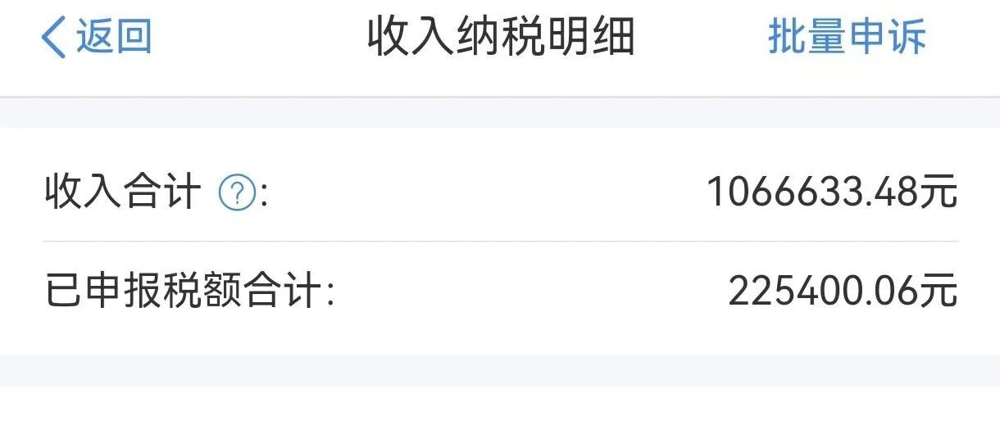

39岁年入百万，还不敢提前退休？！
点击关注 秋秋在分享
一起实现财务自由退休
大家好，我是秋秋呀。
最近我都在三亚度假，看着沙滩美景感受好天气，觉得日子如此惬意！！！


有朋友就发来一个年入百万的工资条，告诉我这样好的日子与他无缘。
他39岁，中层管理人员，手里有三套房还有商铺出租，每年被动收入20几个，提前退休按道理来说没啥困难。

然而面对"自由"却慌了神，年入百万、利息也能覆盖支出，却不敢退休？
不是钱的问题，是"生活系统"的问题。
前几天我看到个数据：中国有68%的职场人表示"除工作外没有固定爱好"。
不敢退休，不是怕没钱，而是失去生活的坐标。
当生活只剩下工作，退休就是空心人。
我身边很多"成功模板"，985毕业、大厂工作，35岁做到总监，有车有房有被动收入。
让他们不上班，不仅会被家人吐槽"闲人‘’，刷多了短视频也会无聊。更可怕的是，越会工作赚钱越有能力的人，越难应对闲暇。
他们也更难从自己的圈子里走出去，就像你认识的小伙伴都在上班，你提前退休就等于放弃原有的社交圈了。
《中国职场人退休准备报告》显示，72%的高收入人群担忧"退休后无所适从"，这个比例远超普通收入群体。

我的三亚24小时：退休生活如何过？
很多人会问我提前退休后无聊了咋办？我感觉不同状态下我都不会！
单身的时候就一个人旅行，在北京的时候就办环球影城年卡、看演唱会追星……
现在我在三亚度假，直接给大家看看我的一天。
7:00 -8:00起床锻炼
我带娃睡时间会比较早，现在就能早起了，起来运动一下。
酒店露台的海风特别舒服，我带着瑜伽垫跟着视频练八段锦。看着太阳从海平面升起，感觉全身的浊气都被排出去了。
8:00-9:30酒店吃早餐
我们酒店吃的特别丰富，中餐西餐下午茶行政酒廊欢乐时光全免费，一天嘴巴不闲着……
好的饮食也能开始一天的好心情。


9:30-11:30溜娃+高尔夫体验
酒店有高尔夫球场会教握杆练习，我会玩一会。旁边就是儿童乐园，我上午大多时间陪着娃。


12:00-15:00 午休+下午茶
一般娃睡了，我就跟着休息半小时，然后写公众号的稿子或者看书。娃醒了我们一起去吃点下午茶。
15:00-18:00 沙滩放松时间
他爸接手下午带娃挖沙子，轮流带娃都能有独自大把时间。
我就会去酒店的泳池游泳，或者躺在沙滩椅上，听歌看看书。


每天都有"什么都不用做"的奢侈，才是退休生活的精髓！
下午我就晒太阳吹海风，也被酒店认识的阿姨说"看看现在的小姑娘，年轻轻就这么会享受生活。"
19:00-22:00 追剧+复盘
哄娃睡后，我会舒服的在大浴缸洗个澡，然后追剧10点半就睡了。

这一天下来，真正属于"完全自由"的时间其实只有4个小时，其他时间我也是写点东西看着孩子，却让我感到充实又放松。
黄金分割：闲暇时间不要太多
哲学家罗素早在《闲暇颂》中就主张："明智地利用闲暇，是文明的终极产物。"
他认为每天4小时专注工作足以创造社会价值，剩余时间应用于学习与创造。
英国作家Oliver Burkeman进一步验证：每天3-4小时的深度活动是人类认知的黄金区间。
和工作时间一样，闲暇时间并非越多越好，过多的闲暇会降低生活的秩序感，长期下来还可能引发精神空虚、自我价值感降低的情况。
4小时的时长足以覆盖睡眠之外的放松需求，也能让生活保持高效且舒适的平衡状态，维持“张弛有度”的生活节奏。
我现在雷打不动每天只留4小时"空白时间‘’，其他时间也会写东西学习，效率反而更高，幸福感也提升。
对抗退休焦虑的3个实操技巧
最后再分享3个我自己验证过的，觉得无聊可以做的事：
1. 打造"3×3快乐清单"
每天列出3件必须做的事，3件想做的事。必须做的事包括运动、学习、家务，想做的事可以是追剧、拼乐高、甚至发呆。我在三亚的清单是：
✅ 必须做：八段锦、写500字、陪娃1小时
✨ 想做：学高尔夫、游泳、看日落
2. 建立"弱社交"网络
退休后最怕的不是孤独，是"被需要感"消失。可以加入兴趣社群，但不用刻意维护关系。
比如我在网上的退休小组，每天会线上讨论，平时各忙各的；在小区的书法协会，去不去全凭心情。
这种"可进可退"的社交，比职场的"无效饭局"舒服多了。
3. 培养"生产型爱好"
区别于"消费型爱好"（比如追剧、刷短视频），生产型爱好能带来持续的成就感。
我喜欢写作摄影，都能不断输出。
其实提前退休从来不是"不工作"，而是把"为别人创造价值"变成"为自己创造生活"。
真正的自由不是想做什么就做什么，而是不想做什么就可以不做什么。
如果你也在向往退休生活，先问问自己：如果明天不用上班，你会怎么安排这24小时？
如果暂时安排不好，那还不如好好上班，尤其高收入人群！